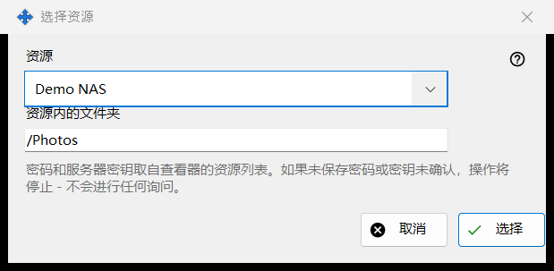
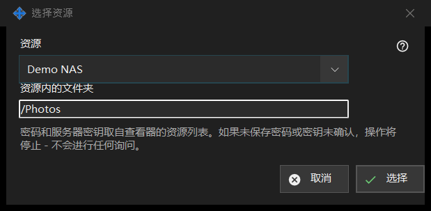

选择资源
用途说明
从查看器的资源列表中选取一个资源，作为计划操作的来源或目标。它从计划操作窗口中来源或目标旁边的「资源..」打开。


操作顺序
- 在「资源」列表中选择资源。
- 检查或更改「资源内的文件夹」；它初始为资源的根文件夹。
- 点击「选择」。「取消」保留原来的位置。
界面元素
资源列表
只提供查看器列表中的 SFTP 服务器和网络文件夹，按名称排序；其他类型的资源不会出现。如果一个也没有，窗口会显示：资源列表中没有合适的资源。请在查看器中添加 SFTP 服务器或网络文件夹。同时「选择」保持不可用。添加或重新信任资源在查看器中进行；此窗口不建立任何连接。
资源内的文件夹
文件夹必须位于所选资源的根目录之内，否则操作窗口中的「保存」会拒绝它。选择另一个资源会用该资源的根目录重新填充文本框。
无人值守运行
密码和服务器密钥来自查看器的资源列表。运行时不会提问：如果密码没有保存或服务器密钥未确认，操作会停止，历史记录会说明原因。只读资源不能作为移动或删除的目标，根目录受 PIN 保护的资源会被拒绝，归档只接受普通文件夹。